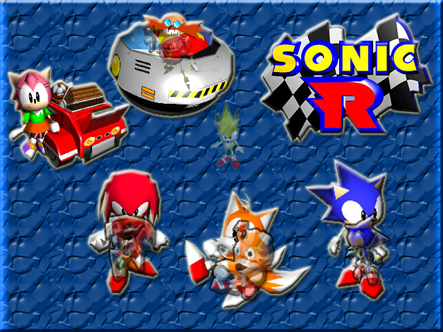

Cегодня с вами ваш слуга Санёк и сегодня вы (может быть) прочитайте мой небольшую
статью по не очень известной и довольно таки старенькой игре, "Sonic R"
Не которые спросят,"а что это за игра такая? Откуда ты её откопал" и тд
Так вот,игра была разработана в 1997 г.
Sonic Team и Traveller's Tales(британская
компания создавшая кучу лего игр и "Sonic 3D Blast" в 1996 г.) и выпущенна всеми
любимой "Sega".
Sonic R является гоночкой без машинок (машина есть только у Эми,а
Эггман как обычно разъезжает на своём...не помню название,ну и пофиг) .
Игра была
разработана для приставки SS(Sega Saturn) и персональных компьютеров,а через 7-8
лет портирована на Nintentdo GameCube и PS2 в сборнике "Sonic GemsCollection" .
В данной игре впервые появился Метал Наклз(которого забыли и это немного обидно),
Теилз Долл(герой не малого количесва крипипаст,жутких историй и "exe" игр) и
Эгг Робо (робот кторого вспомнили в Sonic Mania).
В игре всего 5 трасс 4 с самого
начала игры,а пятая открывается после прохождения предыдущих.
Персонажей в игре в
два раза больше,чем трасс,десять.
Четыре с самого начала,после прохождения всех
трасс + 1,а потом и остальные откроются(если вы конечно захотите по изучать трассы
,собрать все медали с изображением Соника на каждой трассе,а потом ещё собрать все
Изумруды Хаоса чтобы открыть Супер Соника).
Список самих персонажей:Соник,Тейлз,Наклз
,Эми,Эггман,Метал Соник,Метал Наклз,Теиз Дол,Эгг-Робо и имба этой игры - Супер Соник.

Геймплей(я не знаю что о нём сказать):
Для гонки,он средний,так-как трасс всего
пять и за день вы быстро их пройдёте,спасти положени могут Изумруды и Медальки,но...
с этим вы тоже можете быстро справиться(я полностью прошёл игру за 6 часов).
Скорость,ускорение и доп. действия у каждого персонажа разные: Соник имеет двойной
прыжок(который похож на самонаводящуюсю атаку Модерн Соника) ,Теилз умеет летать,
Наклз парить,Эми ускоряться(так как она изначально медленная),Эггман стрелять и
тд. К игре ты можешь быстро привыкнуть и освоится,но вот к чему ты никогда не
приспособишься,так это к чёртовому управлению(!!!).
Когда ты пытаешься хоть как-то
повернуть персонажа,то он полюбому во что-нибудь врежится,или упадёт в воду.
Сюжет(в кратце):
"Решил Соник отдохнуть,устроить каникулы так-сказать,но Тейлз увидел рекламу в
которой говорилось про гонки и он такой:
- Соник,го на гонки? - а Соник в ответ,
- нет - но через секунду Соник увидел,что на рекламе есть список участников и
среди них есть Доктор Эггман и Соник такой сел,потом встал и на гонки побежал,а
Теилз за ним
В это время Эггман ухохатывается с Соника и Тейлза и говорит:
- Вы попались в мою ловушку,дурачки,я уничтожу двух зайцев одним выстрелом,а именно
соберу все Изумруды Хаоса и одолею Соника с помощью величаёшего оружия созданного
с помощью Изумрудов Хаоса!(и новых робот естественно) - в это момент,в темноте
сверкнули чьи-то глаза,а Эггман...
- Хахахахахахахаахахахахахахахахахахаха!!!"
Ну... с сюжетом тут лучше чем в "Spark The Electric Juster" так что...да
Вообще сюжет тоже средний и такой себе... но для тех времён вполне неплохой,но всё
равно средний...
Музыка:
Вы же знайте что скажу про музыку,так? *вздох* ОНА ШИКАРНА 100\10,РАЙ ДЛЯ УШЕЙ!!!
Это моё мнение конечно,но перед тем как я начал делать эту статью,я спросил
людей из Дискорда(Сервер Super Sonic Con) что они думают про "Sonic R" и все
ответили ,ВСЕ ответили что там шикарная музыка так что... да
Итог: Игра уже старенькая и отжила своё внимание,однако некоторые фишки из неё
используются и по сей день,по типу двойного прыжка,дорожек которые ускоряет за
определённую сумму колец и тд. Так же скажу что игра является последней игрой
эры "Classic" и следующая выпущенная игра Sega'и,является "Sonic Adventure",которая
обновляет вселенную синего ежа и переходит в Эру "DreamCast".
На этом всё,
с вами был Санёк,довстречи в следующёй статье *положил на стол листок с фактами
и бонусами и уходит*
Факты и Бонусы:
Кент который написал сюжет к 160-и выпускам комиксов "Archie"(По Сонику) 6-и эпизодам Соник Бум и на данный момент пишет пишет сюжет к комиксам "IDW" заявил,что сюжет игры является каноном вселенной.
В игре названия всех трасс начинаются с буквы "R"
В игре почти ни у кого нет автомобилей,хотя является гонкой (автомобиль есть только у Эми)
Это моя первая статья про игру,из-за чего она может быть не очень...
Ну и в виде бонуса я оставлю здесь мануал Sonic R на Sega Saturn